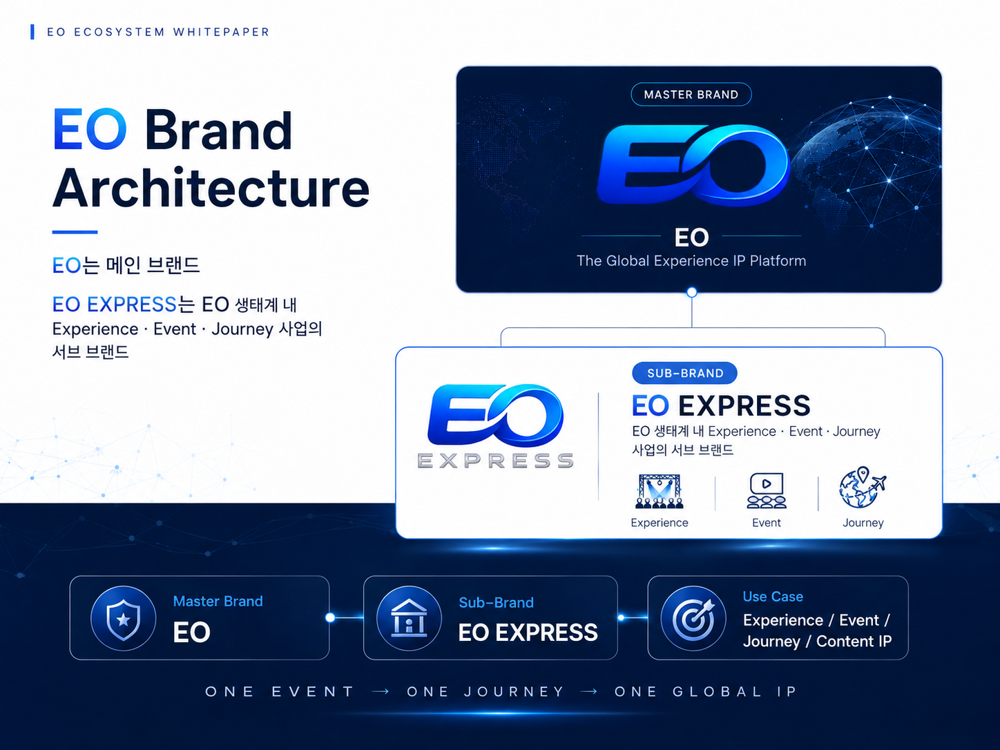

03
Vision & Brand Philosophy
PUBLIC RELEASEVision & Brand Philosophy
EO Token의 “EO”는 Eternal One의 약자입니다. 이는 단순한 토큰 명칭을 넘어, 경계를 넘어 사람과 사람, 커뮤니티와 시장, 온라인과 오프라인, 현재의 서비스와 미래의 교류 기회를 지속적으로 연결한다는 브랜드 철학을 상징합니다.
Main Slogan
One Future, Forever Connected
하나의 미래, 영원한 연결
Brand Positioning
EO Token은 한반도에서 출발하지만 연결된 세계를 지향합니다. 한반도와 통일TV의 미디어·데이터 역량은 중요한 출발점이며, EO 자체는 사람과 시장, 콘텐츠와 경험, 커머스와 디지털 서비스를 연결하는 글로벌 유틸리티 브랜드로 확장하는 것을 목표로 합니다.
Practicality over Political Slogans
EO Token은 특정 정치적 구호나 이념을 중심으로 설계된 프로젝트가 아닙니다. 사람과 사람, 콘텐츠와 시장, 커머스와 경험을 실제 서비스 안에서 연결하는 실용적 디지털 생태계를 지향합니다.
One People — Limited Brand Statement
“One People. One Network. One Future.”는 EO의 출발 철학을 설명하는 브랜드 철학 챕터에서 제한적으로 사용합니다. 대외 메인 메시지는 “One Future, Forever Connected”를 중심으로 운영합니다.

도표 9. EO 마스터 브랜드와 EO EXPRESS 서브 브랜드 구조